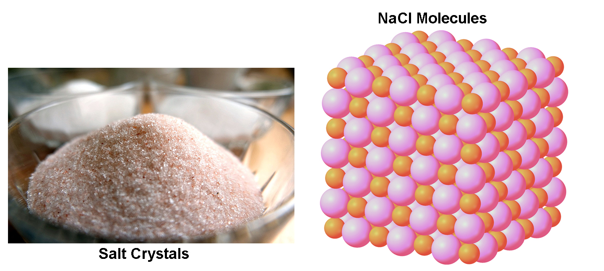

Crystals
What are Crystals? When you think of crystals, you may think of pretty gems that are used in jewelry, like diamonds (April birthstone), amethysts (February birthstone), and peridot (August birthstone). Some different types of crystals are shown below. Maybe you can identify them.

Other examples of crystals include table salt
(NaCl), ice (H2O
in its solid form), and sugar (C12H22O11).
But
what makes something a crystal? Crystals
are defined as substances whose molecules
are arranged in a repeating pattern. It is this repeated molecule arrangement that gives
crystals qualities like shininess and colors that makes them look pretty to us.

- For example, table salt is a crystal made of a repeating pattern of NaCl molecules. One NaCl molecule is shown below:
- The molecules are arranged like in the picture below on the right. As you can see, the repeated pattern is very simple.

Ice (the solid form of water, or H2O) is another example of a crystal. A water molecule is shown below.

In ice, H2O molecules are arranged in repeating patterns. There are many types of patterns that H2O molecules in ice can form. Two possible patterns are shown below. The pictures below are "ball and stick" representations of ice crystals: regular patterns of H2O molecules. Oxygen atoms are shown as darker blue balls, hydrogen atoms are shown as lighter blue balls. The bonds between atoms are black lines (solid to the left and dashed to the right). (Remember that bonds are not physical "things", like atoms, and just represent attractive forces between certain atoms.)
In ice, H2O molecules are arranged in repeating patterns. There are many types of patterns that H2O molecules in ice can form. Two possible patterns are shown below. The pictures below are "ball and stick" representations of ice crystals: regular patterns of H2O molecules. Oxygen atoms are shown as darker blue balls, hydrogen atoms are shown as lighter blue balls. The bonds between atoms are black lines (solid to the left and dashed to the right). (Remember that bonds are not physical "things", like atoms, and just represent attractive forces between certain atoms.)
In both patterns,
notice that the hydrogen atoms (smaller) in general are closer to oxygen atoms (larger)
than other hydrogen atoms. And the oxygen atoms are closer to hydrogen than other oxygen
atoms. (Some oxygen atoms look like they are closest to other oxygen atoms, but that's
because it's hard to show 3 dimensions in a 2 dimensional picture, and the hydrogen atoms
may be hidden by oxygen atoms that are in front of them.)
Heads Up!! Some people mistakenly think that "crystals" are ice. But ice (frozen water) is just one type of crystal. Table salt (NaCl) and sugars are also types of crystals. But salt and sugar (and many other crystals) are not ice! These crystals exist at room temperature. If you touch salt or sugar, it will not feel cold.
Crystals are any type of substance that has repeating molecule patterns.
Crystals are any type of substance that has repeating molecule patterns.